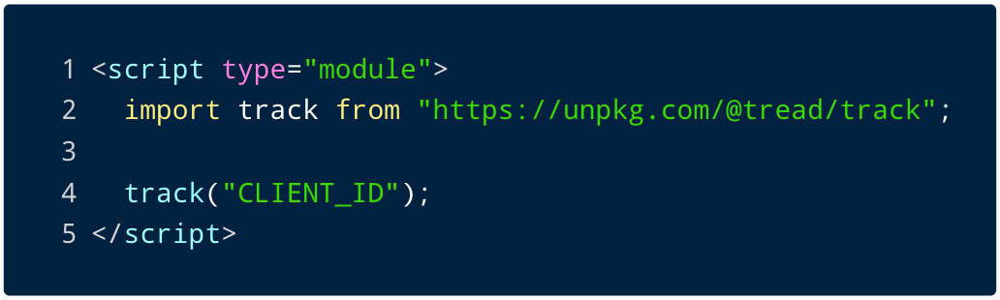

tread
Making analytics simple, powerful and private
✨
Auto-track sessions and clicks
Zero-config analytics dashboard
Five line install (including whitespace)

🔜
Integrations (Segment, ▲ ZEIT + others)
Custom data sources and analysis
Full data encryption